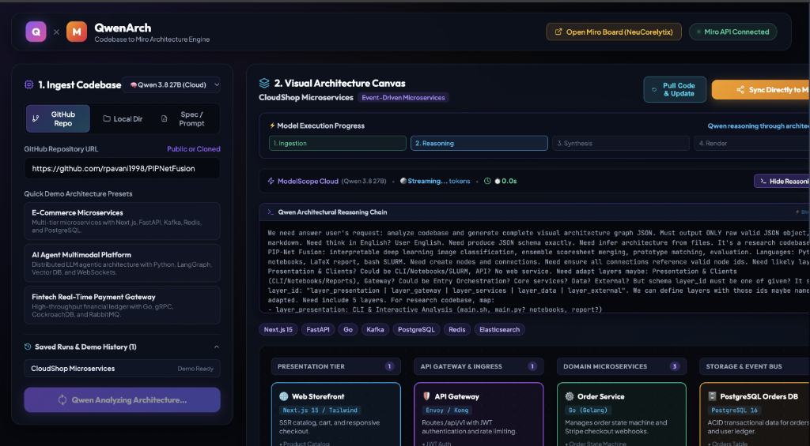
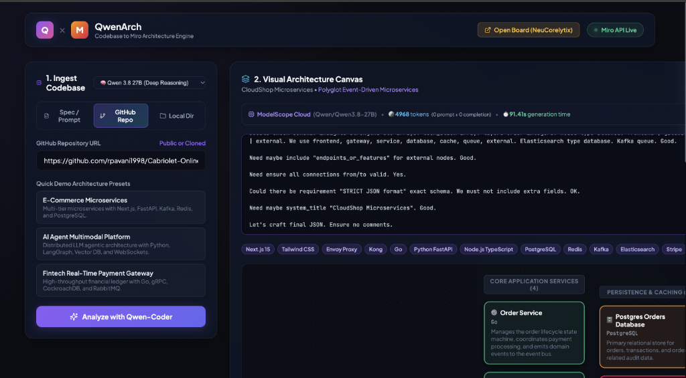

Turn Invisible Code into Living Architecture
Autonomous codebase reasoning powered by Qwen 3.8-27B rendered into an interactive, multi-perspective collaborative canvas synced to Miro.

Code Generation is Instant. Architecture Understanding is Broken.
AI coding assistants generate thousands of lines in minutes, creating unprecedented cognitive debt across every tier of developers.
Ship products at record speed with LLMs, but lack fullstack architectural visibility. When bugs or scaling limits hit, they can't trace the data flow or hidden bottlenecks.
Opening real-world open-source repositories feels like staring at an incomprehensible wall of folders. They need intuitive visual mental models, not 200 open tabs.
Manual diagrams in Draw.io or Lucidchart rot the instant a PR merges. Confluence wikis fall out of sync, leading to misaligned team decisions.
QwenArch: Intelligent 3-Stage Pipeline
Bridging raw repository files to human visual collaboration with zero setup.
Scans repo manifests (package.json, Dockerfile, docker-compose, requirements), API route definitions, database schemas, and entry points into a compact semantic context.
Qwen performs deep structural deduction: identifying microservices, API gateways, database entities, auth boundaries, protocols (HTTP/gRPC/WSS), and risk hot-spots.
Renders instantly in a local interactive canvas and streams node positions, colors, directional connectors, and sticky executive summaries directly to a live Miro whiteboard.
Direct Sync to Miro Whiteboard
Turns static code analysis into an editable whiteboard canvas for team design reviews, onboarding, and planning.
- • Auto-Calculated Grid Layout: Multi-tier coordinate placement prevents overlapping nodes and chaotic lines.
- • Semantic Color Coding: UI (Blue), Gateways (Purple), Services (Green), Databases (Amber), Cache (Red), Queues (Indigo).
- • Executive Architecture Card: Auto-generates sticky notes summarizing strengths, risks, and scaling bottlenecks.

Built for Everyone Who Touches Code
Tailored visual perspectives designed for varying technical depths.
Get a high-level component map that explains what every generated service does without getting lost in implementation syntax.
Learn how enterprise software connects by viewing step-by-step conceptual walkthroughs of large open source projects.
Review architectural pull requests, verify security boundaries, and spot single points of failure before production merges.
Gain instant visibility into backend capabilities, data pipeline steps, and dependencies for sprint planning.
7 Architecture Perspectives + Custom Directives
Generate the exact diagram view needed for your specific context.
Guide Qwen's reasoning focus with prompt directives or one-click preset chips:
Beyond Static Markdown Charts
Why QwenArch surpasses legacy AST generators and single-purpose diagram tools.
| Capability | Mermaid Sync / Code2Chart | CodeBoarding / Diagrammer | QwenArch (Ours) |
|---|---|---|---|
| Live Miro Whiteboard Sync | ✗ Static file only | ✗ Web-only silo | ✓ Live Interactive Miro Canvas |
| AI Reasoning Engine | Regex / Simple AST | Rule-based diffs | ✓ Qwen 3.8-27B Deep LLM Reasoning |
| Audience Adaptability | Devs only | PR Reviewers | ✓ Vibe Coders, Learners, Leads & Execs |
| Custom Focus Directives | ✗ Fixed output | ✗ Fixed output | ✓ 7 Perspectives + Custom Prompt Directives |
| Deployment Flexibility | CLI / Script | Proprietary SaaS | ✓ 1-Click Vercel Serverless + Local |
Modern Lightweight Tech Stack
Engineered for fast serverless execution and real-time streaming.
• React 18 + Vite SPA
• Minimalist Titanium theme
• Interactive SVG / DOM graph canvas
• Server-Sent Events (SSE) stream parser
• FastAPI async core
• Vercel Python Serverless (api/index.py)
• Codebase AST & manifest extractor
• Resilient JSON auto-repair
• ModelScope API (Qwen 3.8-27B)
• Local Ollama fallback
• Miro REST API v2 connector engine
• Hierarchical auto-layout calculator
The 60-Second Meetup Pitch
"How many of you have generated an entire project with AI in an afternoon, only to realize you can't visualize how all the moving pieces connect?
Traditional diagram tools are either rigid AST scripts that spit out unreadable spaghetti, or manual whiteboards that take hours to draw and rot the moment a PR merges.
QwenArch solves this by combining Qwen's deep code reasoning with Miro's infinite collaborative canvas. In one click, it ingests your codebase, reasons through your architecture from 7 distinct perspectives, and paints an interactive, editable whiteboard on Miro with zero setup.
Whether you're a student learning an open-source project, a vibe coder building your MVP, or an engineering lead running a sprint review — QwenArch turns invisible code into clear, collaborative visual thinking."
Ready to Explore
Open source, extensible, and built for the next generation of AI-assisted developers.
qwenarch-vercel.zip)
- • Bi-directional Sync: Edit whiteboard nodes on Miro to auto-generate backend boilerplate code.
- • GitHub Action Bot: Automatically update Miro boards whenever PRs merge into main.
- • Live Telemetry Overlay: View real-time traffic and error rates directly over Miro architecture nodes.
- • AI Voice Walkthrough: Interactive audio guided tour for junior developers and students.